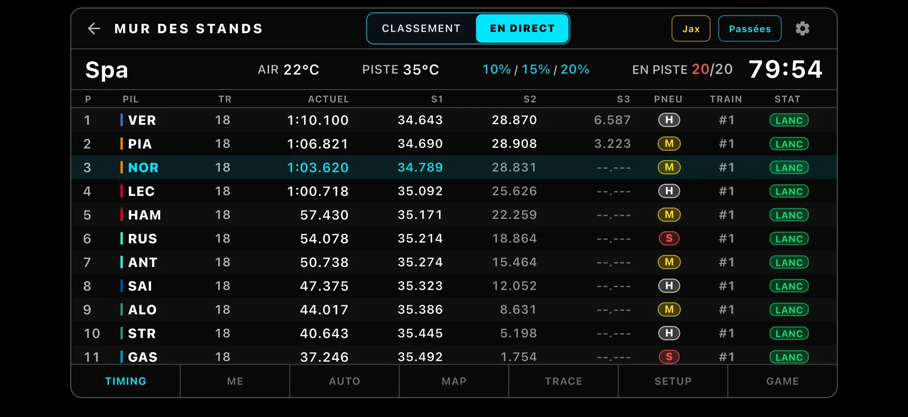

Gratuit
- TIMING : tout le CLASSEMENT, chaque pilote
- GAME : les paramètres de jeu de la session
- ME : vos tours et vos relais
- SETUP : vos réglages de la session, par nom
Comment ça marche
Le chronométrage, vos tours, l’état de la voiture, la carte en direct, les tracés, les réglages et les paramètres du jeu, onglet par onglet.
Depuis le tableau de bord, touchez la barre MUR DES STANDS sur le bord droit. Le mur des stands glisse par-dessus ; touchez la barre TABLEAU DE BORD ou la flèche de retour pour revenir.
Depuis l’écran d’accueil, ouvrez directement Mur des stands. Pratique sur un deuxième appareil, pour un ami qui joue votre ingénieur, ou si vous ne voulez que le chronométrage. Utilisez la flèche de retour pour sortir.
L’en-tête affiche toujours le circuit, les températures de l’air et de la piste, la prévision de pluie, le nombre de voitures en piste et l’horloge de session.



MAP et TRACE ont chacun un bouton d’agrandissement dans leur coin supérieur droit. Touchez-le pour afficher une vue en direct en plein écran, puis le bouton de fermeture pour revenir à l’onglet où vous étiez.
Si le jeu passe à une nouvelle session pendant que vous êtes sur le mur des stands, JMD vous indique que la session précédente est terminée et enregistrée, puis suit la nouvelle. Touchez OK.
Un onglet verrouillé nomme la fonction et ce qu’ajoute Jax Pro, et ouvre l’écran d’abonnement quand on le touche. Les démos intégrées montrent chaque onglet en entier.